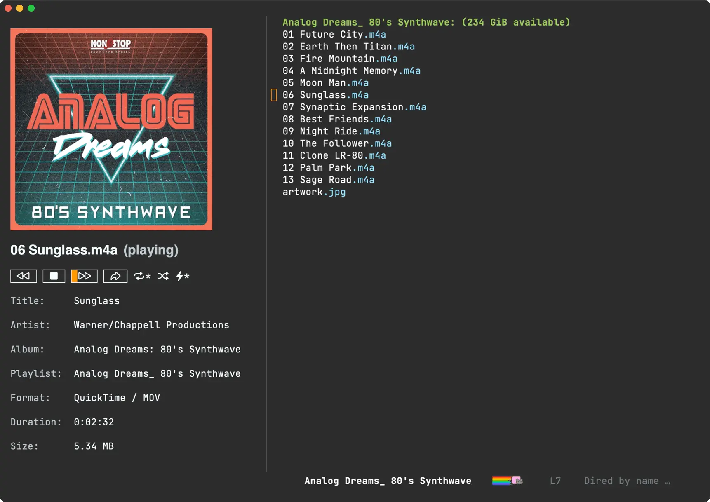
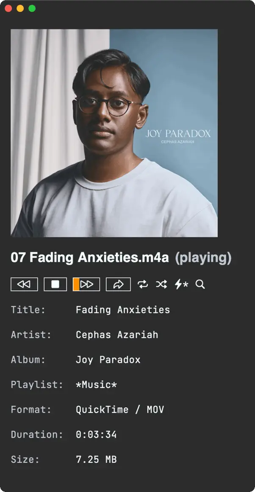
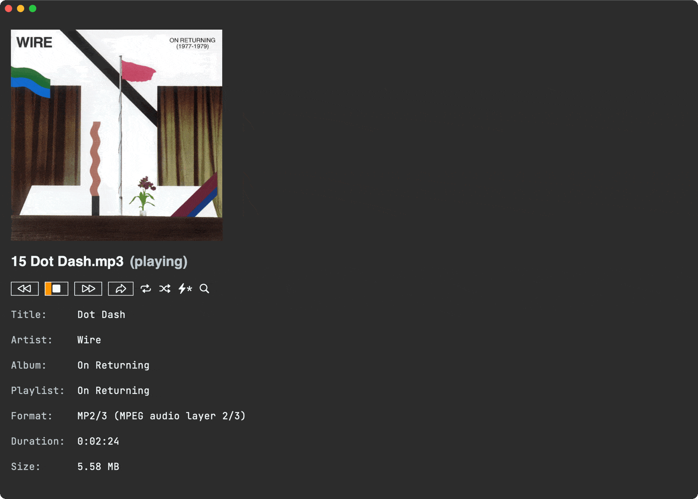

Álvaro Ramírez
Seek and you shall find
A couple of months ago, I introduced Ready Player Mode, an Emacs major mode used to peek at media files from my beloved text editor. The goal was simple. Treat opening media files like any other file, that is, open and go.
The initial implementation served me well while reviewing lots of tiny audio files I used to practice learning a new language. At this point, I started thinking, could I use ready-player for regular music consumption? The thing is, long ago I had stopped buying music and relied on streamed music from online services. Could I go back to offline?
Dusting off my old media collection brought lots of memories as I rediscovered tunes. Having said that, the ready-player experience wasn't quite cutting it for an extended listening experience. I no longer wanted to occasionally peek at media to learn a language. I wanted to load a full music collection. I wanted random access to everything. I wanted Emacs to remember what I was listening to across sessions… While I did add some pluggable flows, I still needed additional changes to make the experience more pleasant.
While plugging away at my own ready-player's pet peeves, I also collected a handful of feature requests. Let's go over the latest features.
Seek (f/b binding) - feature request
While not a feature I initially thought ranked highly in priority, I now find myself seeking audio files from time to time. Ready Player delegates all playback to the likes of mpv, vlc, mplayer, and so on… Up until now, interacting with these utilities merely consisted of feeding a media file path on to the respective process.
Command line utilities like mpv offer socket communication via --input-ipc-server to enable further requests like seeking forward and back. Ready player now supports seeking via mpv. Maybe support for other utilities can be added in the future.
If you're on a recent version of ready-player, seeking is automatically enabled if you've got mpv installed and aren't explicitly customizing ready-player-open-playback-commands. The default value takes care of things:
(defcustom ready-player-open-playback-commands '(("mpv" "--audio-display=no" "--input-ipc-server=<<socket>>") ("vlc") ("ffplay") ("mplayer")) "..." :type '(repeat (list string)) :group 'ready-player)

Pause/resume (SPC binding) - feature request
Until now, ready-player could only play and stop, so you always had to start playing tracks from the beginning. With mpv ipc support now in place, adding pause/resume was a breeze. Like seek, it should just work for ya if mpv is on your system and no explicit customization of ready-player-open-playback-commands.
Repeat current file (r binding) - feature request
While repeating current playlist (or directory) was already supported, there was a feature request to enable repeating files. Toggling repeat now cycles through available modes.

Selective players - feature request
With ready-player delegating to a single utility for either audio or video playback, folks may have a need to specify different utilities for either of these two. While I'm happy for mpv to handle both audio and video now have a couple of prepending options.
Use a predicate function
Prepend each utility with either the built-in ready-player-is-audio-p or ready-player-is-video-p functions, or maybe create your own predicate helper.
(setq ready-player-open-playback-commands '((ready-player-is-audio-p "ffplay") (ready-player-is-video-p "mpv")))
Use an extension list
In this example, we delegate mp3 and ogg playback to ffplay and everything else to mpv.
(setq ready-player-open-playback-commands '((("mp3" "ogg") "ffplay") ("mpv")))
Autoplay (a binding) - feature request
Automatically start playing once file opens. No need for user to explicitly request playback.
Mark in dired (m binding) - feature request
Open a dired buffer and mark the currently played file.

M3u playlists - feature request
While I talked about how the dired abstraction made basic m3u playlist support possible, it wasn't until recently that I included this experiment in the package itself. In addition, .m3u are now recognized by Emacs and automatically open like any other file: find-file, dired, projectile…
Load recursive directory
With the dired abstraction at its core, ready player can load any dired buffer. You could do something like:
M-x find-dired RET.- Pick a directory. RET.
- Type
"-iname \*.mp3 -o -iname \*.ogg -o -iname \*.m4a"RET. M-x ready-player-load-dired-bufferRET.
While uber flexible, there's no need to regularly do that, so you can now invoke M-x ready-player-load-directory and it will recursively find all media files in it.
Toggle player view (C-c m m binding)
While we can always get back to the player buffer via our favourite buffer-switching mechanism (I like ivy's ivy-switch-buffer), we now have M-x ready-player-view-player available for quicker toggle.
Remember session
Playback is now remembered across Emacs sessions. Toggling player view (C-c m m binding) or playback (C-c m SPC binding) starts the last song you were playing on your previous Emacs session.
Index + searching (/ or C-c m /)
We now have automatic indexing, which enables richer searching across your collection, not to mention that random access I was craving.

Global bindings
Last but not least, you may have noticed a handful of key bindings throughout the post. Single-character bindings all work within a ready-player buffer. Bindings prefixed C-c m are now globally available when ready-player-mode is turned on. This can be customized via ready-player-set-global-bindings.
Please help make it all self-sustainable
If you find this package useful or got the features you wanted, please consider sponsoring the work. I've left my tech job (maybe a post for another time) and looking to make projects like ready-player self-sustainable.
If you're an iOS/macOS user, you can also buy my apps. Here's another freebie (macosrec) I've put out there, which I regularly use to capture Emacs demos for this blog.
You may also enjoy this blog and all the tips I share. Blog posts take time. Consider sponsoring my blog.
I've built other Emacs packages you may already use or would like to. Maybe I already built a feature request? Consider sponsoring:
I'm also building lmno.lol, a new blogging platform, with drag and drop to the web. Maybe you want to try that too? Get in touch.
Thank you!
Álvaro